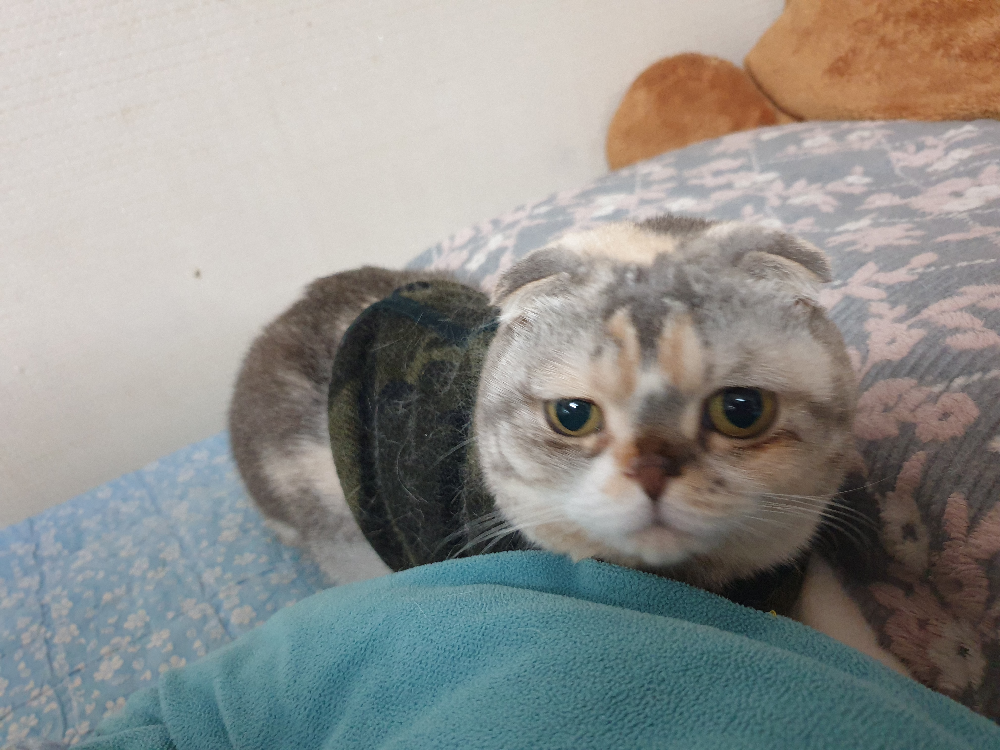

갱쓰리내용 얼마 전까지만 해도 엄청 아파하는 모습을 봐서 정말 마음이 많이 힘든 집사였었네요 벌써 시기만 해도 세 달이 지나가는데 그동안 어떻게 지나가는지 몰랐어요 그래도 많이 나아지는 탓에 여유를 조금 가지게 되었답니다 조금만 더 늦었어도 만성으로 될 수도 있었다고 하더라고요 물론 앞으로도 계속 관리를 하면서 신경은 써주어야 하지만 이번을 통해서 조금 더 돈독해진 거 같기도 하네요 처음에는 너무 걱정이 많이 되어서 이리저리 검색하면서 엄청 찾아보고 잘하는 곳마다 연락을 해서 물어 보이기도 하고 진짜 많이 알아봤었어요 처음에는 스코티쉬폴드 고양이 한테서만 나타난다고 하는 그런 유전병인 걸까 싶기도 하고 그랬었거든요 근데 이게 중요한 건 자주 뽀뽀를 해야 알 수 있는 거 같아요 처음 키우는 초보이다 보니까 저의 경우 굉장히 신경을 많이 써준다고 생각을 하고 있지만 그래도 모자란 부분이 조금은 있더라고요 이렇게 아플 때 말이죠 특히 모찌의 경우 너무 티가 안 나고 조용하기 때문에 알아차리기가 힘들더라고요 중성화하기 전에도 소리 하나 안 내고 조용히 아파하는 거 보면서 제 마음이 아파서 해주게 되었지만 말이에요 아무튼 급성 신부전의 경우에는 입에서 냄새가 엄청 심했어요 이게 입 냄새가 아니라 속 안에서 나는 그런 악취라고 할까요 저도 처음에 몰랐는데 자주 뽀뽀를 하다 보니까 바로 알겠더라고요 진짜 중요한 건 평소에 키우는 반려동물과 스킨십에서부터 차이가 있는 거 같아요 자주 안아주지 않고, 만져주지 않고 그러다 보면 아픈걸 주인이 잘 못 느끼니까 금세 만성으로 심해질 경우가 높기도 한거 같아요 